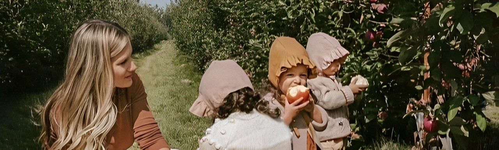
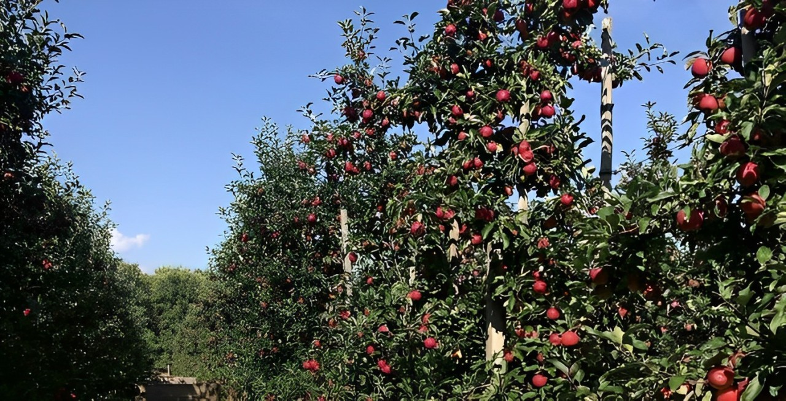
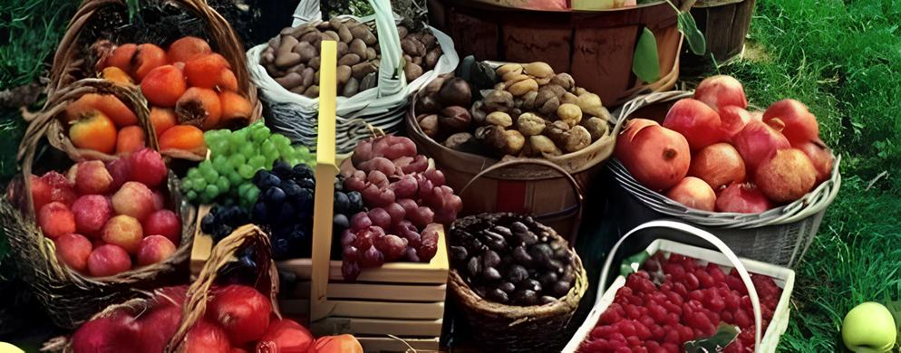
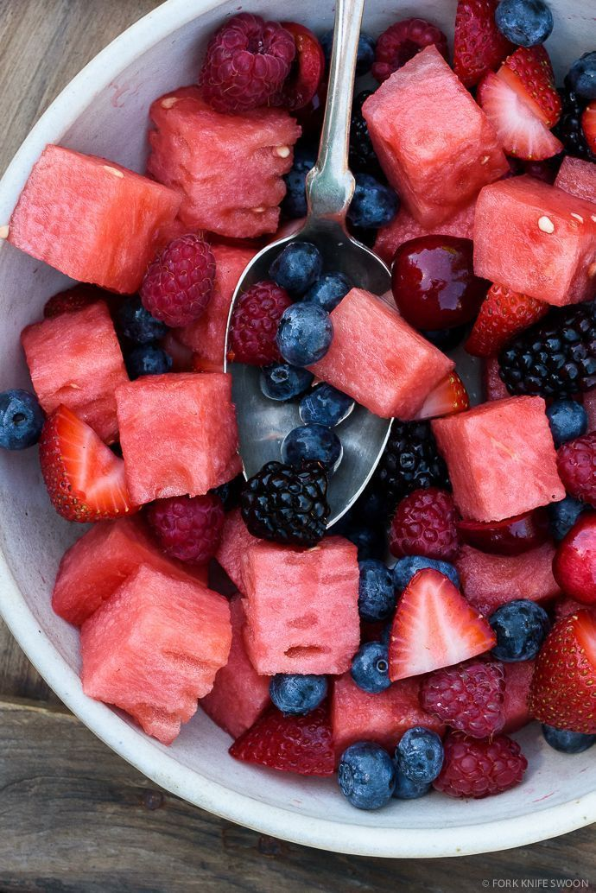

Sobre Nós
Quem Somos
Nós somos uma família de agricultores que sempre sonhou em criar uma frutaria que ofereça produtos frescos e saudáveis para a comunidade. Com anos de experiência em agricultura, decidimos criar a nossa própria frutaria, Mundo das Frutas, para compartilhar nossa paixão por frutas e legumes com outras pessoas.
Nossa História
Em 2010, começamos a plantar nossos primeiros pomares em uma pequena área rural. Com o tempo, nossa produção cresceu e decidimos criar uma frutaria para vender nossos produtos diretamente para os consumidores. Em 2015, abrimos as portas do Mundo das Frutas e desde então, trabalhamos intensamente para oferecer os melhores produtos para os nossos clientes.
Nosso Processo
Selecionamos cuidadosamente nossos produtos para garantir que sejam frescos e de alta qualidade. Plantamos e colhemos nossos produtos em nossa própria fazenda, utilizando técnicas sustentáveis e respeitosas com o meio ambiente. Além disso, trabalhamos com fornecedores locais para oferecer uma variedade de produtos.
Nossa Missão
Nossa missão é oferecer produtos frescos e saudáveis para a comunidade, promovendo uma alimentação saudável e sustentável. Além disso, queremos criar um ambiente agradável e acolhedor para nossos clientes, onde possam encontrar produtos de alta qualidade e receber atendimento personalizado.
